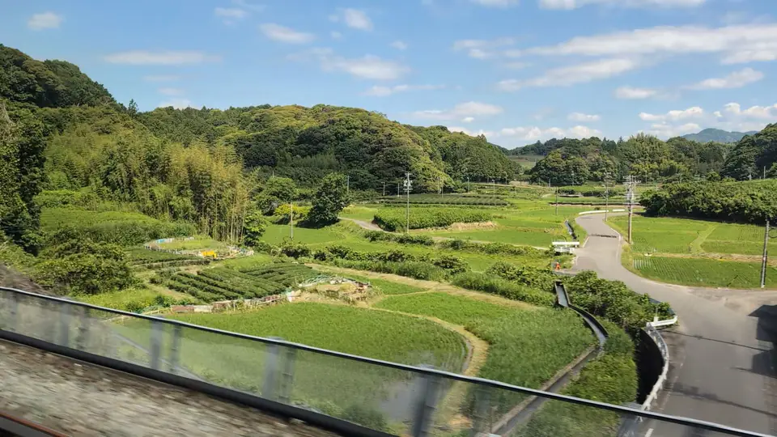

TOKAIDO SHINKANSEN WINDOW VIEW
Tea fields across Makinohara and Kakegawa, seen from the Shinkansen
Rows of green tea from the window.

- Section
- Shizuoka → Kakegawa
- Seat side
- Seat E · mountain side
- Timing
- About 61 minutes after leaving Tokyo on a Nozomi train
- Photos
- 2 photos
What kind of tea region are these ridges?
Shizuoka Prefecture has long been Japan's largest tea-producing area, historically accounting for 30–40 percent of the country's crude tea output. The stretch through Kakegawa, Kikugawa, Shimada and Makinohara — right where the Shinkansen runs — is one of its densest tea belts. Fields curve along the contours of the land, with narrow trimmed ridges tracing every rise and dip. The tall poles topped by propellers you see poking above the ridges are frost-protection fans, used on cold spring nights to mix chilled surface air with warmer air above and protect the young buds.
More: Ochanomachi Shizuoka City: TourismShizuoka Tea Council: Shizuoka green tea (Japanese only)Shizuoka Prefecture: Shizuoka tea regions and history (Japanese only)
If you are traveling from Tokyo toward Shin-Osaka, start watching the Seat E · mountain side window as you approach Shizuoka → Kakegawa. If you are traveling toward Tokyo, the order is reversed.
Why is so much tea grown here?
Tea growing in Shizuoka traditionally traces back to the Kamakura-era monk Enni, who is said to have sown seeds along the Abe River. By the Edo period, Suruga tea was already well known. What really turned the region into a major producer was the Meiji-era opening of the Makinohara Plateau: former Tokugawa retainers who had lost their positions cleared and cultivated this upland to rebuild their livelihoods, and discovered that its well-drained red soil and elevated climate suited the tea plant. Makinohara, Kakegawa and Kikugawa grew into a belt of large tea farms from that point onward.
The area around Kakegawa is especially known for fukamushi sencha, a deeply steamed green tea that yields a dark green infusion with softened astringency and rich, sweet notes. Within Shizuoka itself, different districts — Kakegawa, Makinohara, Kawane and others — each have their own character, which is part of what makes this stretch of window fun.
The fields also change dramatically with the season. During the ichibancha (first-flush) harvest in April–May, pale yellow-green buds line the tops of the ridges and the frost fans run through the night. Summer and autumn deepen the green, and winter settles into a calm darker green — the same stretch of window looks quite different depending on when you ride.
Location at a glance
Open mapSwitch between the spot and the Shinkansen viewpoint.
How to catch Shizuoka Tea Fields
1. Choose the window first
As you approach Shizuoka → Kakegawa, start watching from Seat E · mountain side. Use Live Guide while riding, or the map on this page before you board.
This wider view appears intermittently through the section. Buildings and terrain may block it, so the timing is a guide for when to start looking, not a continuous visibility claim.
2. Highlights
After Shizuoka, first notice the striped green pattern beside the tracks. Then start counting the tall fans standing above the ridges — those frost-protection fans are a signature of Shizuoka tea. Pair the fields with the glimpse of Kakegawa Castle just after, and this stretch becomes easy to remember: tea fields first, castle right after.
Shizuoka Tea Fields in photos

 Related
Kakegawa Castle
Related
Kakegawa Castle
 Related
Mt. Fuji beyond Lake Hamana
Related
Mt. Fuji beyond Lake Hamana
 Related
Left-Side Fuji
Related
Left-Side Fuji